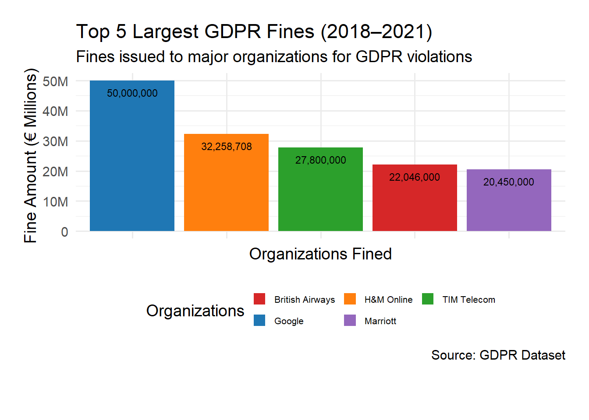
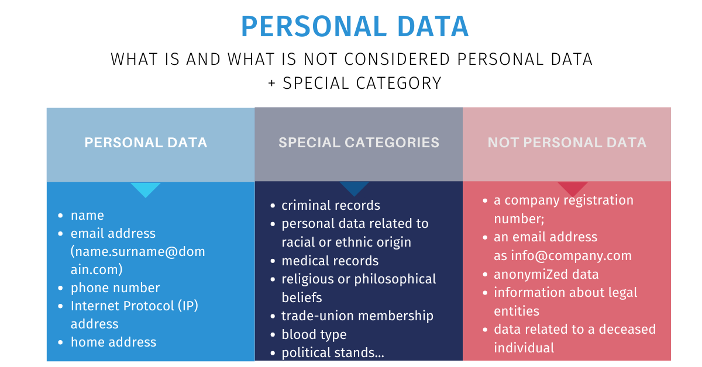
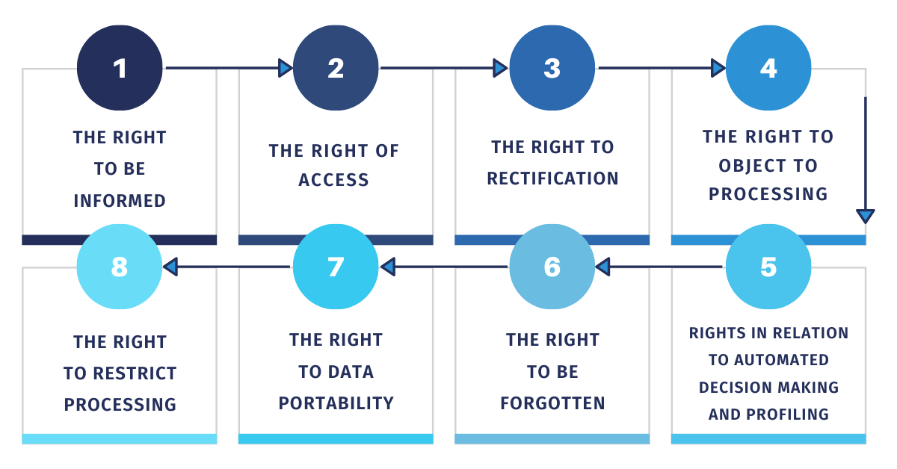

Why Should I Care
Personal Data in the Digital Age
In today’s digital world, personal data is constantly being collected, processed, and shared. From signing up for online services to making purchases or using social media, individuals provide sensitive informationwith out always realizing it. This personal data is not only valuable to businesses in attempts to target marketing but also can be leveraged by cybercriminals.
Without the proper protection, personal data can be misused, leading to identity theft, financial fraud, or privacy violations. Over the years we have seen high-profile data breaches involving companies like Meta and Google, which have exposed millions of users’ personal information. These breaches demonstrate the growing importance of data protection policies to ensure accountability for organizations holding data.
The General Data Protection Regulation (GDPR) was created to address these concerns. It provides individuals with control over their data and enforces strict accountability on organizations that handle personal information.

Risks of Poor Data Protection
Inadequate data protection poses significant risks, which affect both individual and organizations. As mentioned individuals may experience identity theft, fiancial fruad and unauthorized surveillance as result of personal data breaches. The 2019 Facebook breach, which left 540 million user records exposed on poorly secured servers, resulted in the compromising of account IDs, photos, and comments. Breaches like these show that, while individuals can practice safe digital security, organizations must be held accountable as well.
Organizations face equally high stakes. The GDPR enforcement requires these companies that fail to protect data to pay steep fines and face sever penalties. As seen in Amazon being finned €746 million in 2021 for violating GDPR’s transparency requirements. While the fines are significant, repeated breaches or non-compliance serves to damage organization’s reputations as well.
The risks of poor data protection highlight the need for policies like GDPR. By holding organizations accountable and allowing individuals to manage their data, GDPR aims to mitigate these risks and create a safer digital environment.
How GDPR Protects You
The General Data Protection Regulation (GDPR) ensures that individuals retain control over their personal data in the digital landscape. At the core of GDPR are several key rights granted to individuals, alowing them to make informed decisions about their personal data. These include:
The Right to Access: Individuals can request access to their data held by organizations, ensuring transparency.
The Right to Be Forgotten: Citizens can ask organizations to delete their data under specific circumstances, such as when the data is no longer necessary for the purpose it was collected.
The Right to Data Portability: Users can transfer their data from one service provider to another.
The Right to Consent: Organizations must obtain clear and explicit consent before processing personal data.
Beyond protecting individual rights, GDPR enforces accountability among organizations, requiring them to adopt measures such as data protection and appoint Data Protection Officers to oversee compliance. The regulation’s strict penalties and regulatory nature ensure that data privacy becomes a major factor across digital industries.
For individuals, GDPR acts as a safety net, providing protection even for those with limited digital literacy. By mandating that companies be transparent about how they use personal data, GDPR reduces the likelihood of abuse and builds trust in digital services.

Sources
Bohn, Dieter. “Facebook Stored Hundreds of Millions of User Passwords in Plain Text.” The Verge. Accessed November 20, 2024. https://www.theverge.com/2019/3/21/facebook-user-passwords-plain-text-data-breach.
European Commission. “Data Protection in the EU.” Accessed November 20, 2024. https://ec.europa.eu/info/law/law-topic/data-protection/data-protection-eu_en.
GDPR.eu. “What Are the GDPR Data Protection Rules?” Accessed November 20, 2024. https://gdpr.eu/what-are-the-gdpr-data-protection-rules/.
GDPR.eu. “What is GDPR? The EU’s General Data Protection Regulation Explained.” Accessed November 20, 2024. https://gdpr.eu/what-is-gdpr/.
GitHub. “GDPR Fines Dataset (2018 - 2021).” Accessed November 20, 2024. https://github.com/sandykramb/GDPR-fines-Dataset/blob/main/GDPR%20Dataset.csv.
Emotiv. “GDPR - General Data Protection Regulation Glossary.” Accessed November 20, 2024. https://www.emotiv.com/blogs/glossary/gdpr.
Data Privacy Manager. “What Are Data Subject Rights According to the GDPR?” Accessed November 20, 2024. https://dataprivacymanager.net/what-are-data-subject-rights-according-to-the-gdpr/.